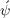
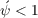

13One way to think of  is as a particular kind of a ‘certainty equivalent’ of the shock; this captures the intuition that mean-one shock renders a given mean level of income less valuable than if the shock did not exist, so that .